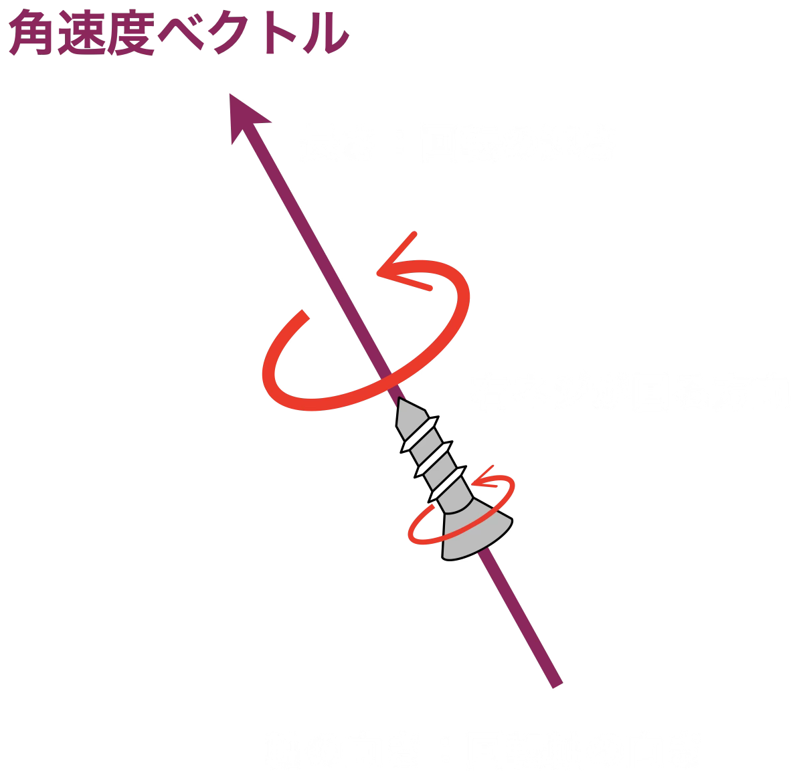

なぜ変化球は曲がるのか
動かして学ぶ変化球の物理
— 角速度ベクトルで理解するボールの変化 —
全ての投球は「変化」している。重力だけで飛ぶボールに比べ、回転するボールは大きく軌道を変える。ストレートも例外ではない。ボールを投げると自然とバックスピンの回転がかかる。むしろ無回転で投げることの方が難しい。
投手が投げるボールは、重力に引かれて放物線を描いて落下する。しかし実際のピッチングでは、ボールはまっすぐ飛ぶように見えたり、鋭く曲がったりする。なぜだろうか？
その答えは回転にある。回転するボールには、空気との相互作用でマグヌス力と呼ばれる力が働き、ボールの軌道を曲げる。ストレートも2000回転以上のバックスピンで重力に抗い、「落ちにくい」軌道を実現している。つまり、ストレートもまた「変化球」なのだ。
この記事では、回転を角速度ベクトル（矢印）で表現し、各球種がなぜそのように曲がるのかを、3Dの可視化を交えて解説する。
第1章: ボールに作用する力
飛翔中の野球ボールには、主に3つの力が作用する（図1）。
📐 研究者向け: 運動方程式と図1の対応
図1に示した力は、以下の運動方程式で記述される:
$$m\ddot{\mathbf{x}} = \underbrace{\color{#ffcc44}{-mg\hat{\mathbf{e}}_Z}}_{\color{#ffcc44}{\text{重力}}} \underbrace{\color{#aaaaaa}{- \frac{1}{2}C_D \rho A {\color{#44ff44}v} {\color{#44ff44}\mathbf{v}}}}_{\color{#aaaaaa}{\text{抗力}}} + \underbrace{\color{#4fc3f7}{\frac{1}{2}C_L \rho A {\color{#44ff44}v}^2 ({\color{#ff8a65}\hat{\boldsymbol{\omega}}} \times {\color{#44ff44}\hat{\mathbf{v}}})}}_{\color{#4fc3f7}{\text{マグヌス力}}}$$右辺の3項が図1の3つの力に対応する。各項の詳細は以下のセクションで順に解説する。（参考: Nathan, Trajectory Calculator）
1-1. 重力 — ボールを下に引く力
全ての物体に作用する下向きの力。95 mph（約153 km/h）のストレートでも、投手のリリースからホームプレートまでの約0.4秒間に、重力だけで約80 cmも落下する（図2）。
もし回転が全くなければ、ボールは放物線を描いて落ちるだけだ。
📐 研究者向け: 重力項
運動方程式の第1項:
$$\color{#ffcc44}{\mathbf{F}_g = -mg\hat{\mathbf{e}}_Z}$$$m$ はボールの質量（5.125 oz = 0.145 kg）、$g$ は重力加速度（9.80 m/s²）、$\hat{\mathbf{e}}_Z$ は鉛直上向き単位ベクトル。95 mph の投球の飛行時間は約 0.4 秒で、落下量は $\frac{1}{2}gt^2 \approx 0.78$ m ≈ 80 cm。
1-2. 空気抵抗（抗力）— ボールを減速させる力
空気中を進むボールは、空気との摩擦で減速する。95 mph（約153 km/h）でリリースされた無回転のボールは、ホームプレートに到達するまでに 約10% 減速し、86 mph（約138 km/h）程度になる（図3）。
抗力はボールの進行方向と反対向きに作用し、速度の2乗に比例する。つまり、速いボールほど大きな空気抵抗を受ける。また、回転数が多いほどボール周りの空気の乱れが大きくなり、わずかだが抗力も増加する。
📐 研究者向け: 抗力項
運動方程式の第2項:
$$\color{#aaaaaa}{\mathbf{F}_D = -\frac{1}{2}C_D \rho A {\color{#44ff44}v} {\color{#44ff44}\mathbf{v}}}$$$C_D$ は抗力係数、$\rho$ は空気密度（約 1.2 kg/m³）、$A$ はボールの断面積（$\pi r^2$, $r$ ≈ 0.037 m）、$\color{#44ff44}v$ は速度の大きさ、$\color{#44ff44}\mathbf{v}$ は速度ベクトル。力は常に進行方向と逆向きで、速度の2乗に比例する。
本シミュレータでは Nathan モデルの抗力係数を用いる:
$$C_D = c_{d0} + c_{d,\text{spin}} \cdot \frac{\color{#ff8a65}{\omega_{\text{total}}}}{1000}$$($c_{d0} = 0.297$, $c_{d,\text{spin}} = 0.0292$). スピンが増えると抗力係数も増加する（縫い目による乱流促進効果）。
スピンによる抗力増加が到達速度に与える影響は、速度の2乗項と比較すると小さい。95 mph の投球で比較すると:
| 条件 | $C_D$ | 到達速度 | 速度低下 |
|---|---|---|---|
| 無回転 | 0.297 | 86.3 mph | 8.7 mph (9.2%) |
| 2000 rpm バックスピン | 0.355 (+20%) | 84.6 mph | 10.4 mph (10.9%) |
$C_D$ は約20%増加するが、到達速度の追加低下は約1.6 mph にとどまる。$C_D$ は約20%増加するが、到達速度の追加低下は約1.6 mph（全体の速度低下 10.4 mph の約15%）にとどまる。
1-3. マグヌス力 — ボールを「曲げる」力
これが変化球の本質だ。回転するボールの周りでは、空気の流れが非対称になる。
回転方向と同じ向きに空気が流れる側では、空気の速度が速くなり、圧力が低くなる。逆側では空気が遅くなり、圧力が高くなる。この圧力差がボールを低圧側に押す力 — マグヌス力 — を生む（図4）。
この「回転軸と進行方向に直交する方向に曲がる」ルールが、全ての球種の変化を統一的に説明する。
外積（クロス積）— マグヌス力の方向を決める数学
マグヌス力の方向は、角速度ベクトル $\boldsymbol{\omega}$ と速度ベクトル $\mathbf{v}$ の外積（クロス積） $\boldsymbol{\omega} \times \mathbf{v}$ で決まる。外積は難しそうに見えるが、次の2つのルールだけ覚えれば十分だ（図5）:

- 方向: $\mathbf{a} \times \mathbf{b}$ は、$\mathbf{a}$ と $\mathbf{b}$ が作る平面に垂直な方向を向く。向きは右ねじの法則で決まる（$\mathbf{a}$ から $\mathbf{b}$ へ指を巻いたとき、親指が指す方向）。
- 大きさ: $\mathbf{a}$ と $\mathbf{b}$ が張る平行四辺形の面積に等しい。2つのベクトルが直交するとき最大、平行のときゼロ。
マグヌス力に当てはめると:
- 力の方向は常に $\boldsymbol{\omega}$ と $\mathbf{v}$ の両方に垂直 → ボールは「回転軸と進行方向に直交する方向」に曲がる
- ωとvの角度が中間的な場合（多くの球種がこれに該当）、マグヌス力はゼロと最大の間の値をとる
下の3Dウィジェットで、回転軸（オレンジの矢印 ω）をスライダーで動かすと、マグヌス力（水色の矢印 F）の方向と軌道がどう変わるか体験できる。ストレート（ω⊥v）とスライダー（ω≈v）をプリセットで切り替えて、力の大きさと方向の違いを比べてみよう。
まず、サイドスピン（S）のスライダーを動かしてみよう。ストレートのプリセットでもスライダーのプリセットでも、Sを変えると角速度ベクトル ω の向きが上下に変化するのがわかるだろう。ストレート系（ωとvがほぼ直交）でもスライダー系（ωがv方向に近くジャイロ成分が大きい）でも、サイドスピン成分の上下がマグヌス力の左右方向を決め、それに連動してボールの軌道が左右に変化する。
次にジャイロ（G）のスライダーを動かしてみよう。ジャイロ成分を増やすと、マグヌス力の矢印が短くなっていく。ωがvに平行に近づくほど、外積 $\boldsymbol{\omega} \times \mathbf{v}$ が小さくなるためだ。
📐 研究者向け: マグヌス力の数式
マグヌス力は次のように記述される:
$$\mathbf{F}_M = \frac{1}{2} C_L \rho A v^2 \, (\hat{\boldsymbol{\omega}} \times \hat{\mathbf{v}})$$ここで $C_L$ は揚力係数、$\rho$ は空気密度、$A$ はボールの断面積、$v$ は速度、$\hat{\boldsymbol{\omega}}$ は回転軸の単位ベクトル、$\hat{\mathbf{v}}$ は速度の単位ベクトルである。
$C_L$ はスピンパラメータ $S = R\omega/v$（ボール表面速度と並進速度の比）の関数であり、baseball.skill-vis.com のシミュレータでは、以下の Nathan の有理関数型モデルを用いている:
$$C_L = \frac{c_2 \cdot S}{c_0 + c_1 \cdot S}$$Nathan オリジナルの係数は $c_0 = 0.583$, $c_1 = 2.333$, $c_2 = 1.12$ であるが、本シミュレータでは Statcast データへのフィッティングに基づき $c_2 = 1.045$ に修正した値を用いている。
次のシミュレーションで、回転なし（水色の破線）と実際の投球（オレンジ）の軌道を比較できる。
🔵 大谷のストレートを3Dで見る第2章: 回転を矢印（ベクトル）で理解する
2-1. 角速度ベクトルとは
回転は角速度ベクトル（$\boldsymbol{\omega}$）で表現できる。この矢印は次の2つの情報を持つ:
- 方向: 回転軸の向き（右ねじの法則）
- 長さ: 回転の速さ（回転数, rpm = revolutions per minute, 1分間の回転数。1 rpm = 0.1047 rad/s = 6 °/s）
右ねじの法則とは、右手の指を回転方向に巻いたとき、親指が指す向きが矢印の方向だ（図6）。

2-2. なぜ「角度」ではなく「ベクトル」なのか
野球界では回転を「Spin Axis」の角度（時計の文字盤の何時方向か）で表現することが多い。しかしこの表現には限界がある:
- 角度は2Dの投影であり、3D的な回転軸の傾きを完全に表現できない
- ジャイロ成分（速度方向の回転）の情報が失われる
- 2つの投球の回転が「どれだけ似ているか」を定量的に比較しにくい
ベクトル表現なら、方向と大きさを同時に表現でき、2つの投球の「似ている度」をベクトルの距離として計算できる。
2-3. 3つの成分: トップスピン・サイドスピン・ジャイロスピン
角速度ベクトルは、投球に対して意味のある3つの成分に分解できる:
- トップスピン (T): 速度に垂直で水平な軸周りの回転。T > 0 でドロップ方向の力、T < 0 で「ホップ」方向の力（バックスピン）が発生する
- サイドスピン (S): 速度とTの両方に垂直な軸周りの回転。横方向の変化を生む
- ジャイロスピン (G): 速度方向の回転（弾丸のような回転）。マグヌス力を生まない
図7の左図のように、角速度ベクトル $\boldsymbol{\omega}$ がT-S平面内（＝投球方向に垂直な面内）にある場合、回転エネルギーのすべてがマグヌス力に変換され、ボールは左右・上下に効率よく変化する。次に述べるスピン効率は100%となる。一方、右図のように $\boldsymbol{\omega}$ が投球方向（G軸）に近づくと、ジャイロ成分が増えてマグヌス力への寄与が減り、上下左右の変化量は小さくなる。ただし、変化量が小さいこと自体が悪いわけではない。球種によっては、ジャイロ成分を積極的に利用して打者のタイミングを外す投球もある。
ジャイロ成分 $\omega_G$（角速度ベクトルのG軸への射影）は、投球軌道の変化を左右する重要な成分である。しかし残念ながら、MLBのStatcastが公開するデータにはこの成分が含まれておらず、公開データだけでは角速度ベクトルを完全に復元することも、物理的に正確な軌道計算を行うこともできない。本サイトのBaseball Pitch Trajectory Simulatorは、Statcastの公開データからジャイロ成分を推定したうえでシミュレーションを実現しており、これが大きな特徴のひとつである。
この T, S, G の3つの軸は互いに直交し、TSG座標系（右手系: $\hat{\mathbf{e}}_T \times \hat{\mathbf{e}}_S = \hat{\mathbf{e}}_G$）を構成する。名前の並び順がそのまま数学的な右手系の巡回順であり、任意の角速度ベクトル $\boldsymbol{\omega}$ はこの3軸への射影として一意に分解できる。下の3Dウィジェットで、TSG座標系の3軸と速度ベクトルの関係を確認しよう。マウスドラッグで視点を回転できる。
📐 研究者向け: TSG座標系と従来のBSG表記について
TSG座標系は $\hat{\mathbf{e}}_T \times \hat{\mathbf{e}}_S = \hat{\mathbf{e}}_G$ を満たす右手系であり、名前の順番がそのまま座標系の巡回順と一致する。
従来の文献では「BSG」（Backspin, Sidespin, Gyro）の表記が用いられることがある。$\hat{\mathbf{e}}_B = -\hat{\mathbf{e}}_T$ であるため、B > 0 がホップ方向（バックスピン）に対応するが、この場合の右手系巡回順は B → G → S（BGS）となり、名前の並び順と軸の数学的順序が一致しないという問題がある。TSG表記ではこの不整合が解消される。
2-4. スピン効率
ジャイロ成分（G）はマグヌス力を生まないため、全回転数のうち実際に変化に寄与する割合が重要になる。これをスピン効率（Active Spin %）と呼ぶ。
TSG座標系では、スピン効率は次のように定義される:
分子の $\sqrt{T^2 + S^2}$ はtransverse spin（速度に垂直な回転成分）であり、マグヌス力を生む「有効な回転」の量だ。分母は全回転数である。
- スピン効率 100%: ジャイロ成分がゼロ。全ての回転がボールの変化に寄与する（純粋なバックスピン、トップスピン、サイドスピンなど）
- スピン効率 0%: 全てがジャイロ回転。弾丸のように回転軸が速度方向を向いており、回転数が多くてもボールは曲がらない
例えば、大谷翔平のストレートは全回転数 2500 rpm に対してスピン効率は約72%。つまり有効な transverse spin は約 1800 rpm であり、残りの約 700 rpm はジャイロ成分として変化に寄与していない。
下のウィジェットで、山本由伸（右投手）と今永昇太（左投手）の各球種のωベクトルを3Dで確認できる。投手を切り替えて、右投手と左投手の回転方向の違いも観察してみよう。球種を選択すると、ω矢印の方向とマグヌス力の方向、そして投手→ホームの軌跡が表示される。マウスドラッグで視点を変更できる。
📐 研究者向け: 正規直交TSG基底
本シミュレータでは以下の正規直交基底を用いる:
$$\hat{\mathbf{e}}_G = \frac{\mathbf{v}}{|\mathbf{v}|}, \quad \hat{\mathbf{e}}_T = -\frac{\hat{\mathbf{e}}_G \times \hat{\mathbf{e}}_Z}{|\hat{\mathbf{e}}_G \times \hat{\mathbf{e}}_Z|}, \quad \hat{\mathbf{e}}_S = \hat{\mathbf{e}}_T \times \hat{\mathbf{e}}_G$$ここで $\hat{\mathbf{e}}_Z$ は鉛直上向き単位ベクトル。$(\hat{\mathbf{e}}_T, \hat{\mathbf{e}}_S, \hat{\mathbf{e}}_G)$ は右手系（$\hat{\mathbf{e}}_T \times \hat{\mathbf{e}}_S = \hat{\mathbf{e}}_G$）を成す。T > 0 でドロップ方向、T < 0 でホップ方向の力が発生する。
第3章: 各球種のωベクトル — なぜそう曲がるのか
各球種の典型的なωベクトルと軌跡を3Dで確認しよう。球種を選択すると、回転軸・マグヌス力・軌跡が表示される。
3-1. ストレート（4シーム, FF）
ストレート（4シーム）のωは、ほぼ水平で進行方向に垂直な方向を向く。これはバックスピン（TSG座標系で T < 0）が支配的であることを意味する。$\boldsymbol{\omega} \times \mathbf{v}$ の結果、マグヌス力は上向きに作用し、重力に抗ってボールを「浮かせる」（正確には「落ちにくくする」）。
右投手の場合、投手目線でωは一塁方向（右）を向く（図参照）。真上から見ると、ωにはわずかなジャイロ成分（速度方向の成分）が含まれることがある。ジャイロ成分はマグヌス力に寄与しないため、スピン効率が100%に近いほど、同じ回転数でもホップ量が大きくなる。
3-2. カーブ（CU）
カーブのωは、FFとほぼ逆方向（トップスピン方向、TSG座標系で T > 0）を向く。これにより $\boldsymbol{\omega} \times \mathbf{v}$ が下向き + 横方向の力を生み、ボールが大きく落下しながら曲がる。
球速はストレートより大幅に低い（70〜80 mph / 113〜129 km/h）が、回転数は高い（2500〜2800 rpm）。右投手の場合、ωに含まれるサイドスピン成分により、落下に加えてグラブサイド（三塁方向）への横変化も生まれる。真上から見ると、ωにはジャイロ成分が含まれることもあり、スピン効率は投手によって異なる。
3-3. スイーパー（ST）
スイーパーのωは、投手目線でほぼ鉛直上向きを向く。これはサイドスピンが支配的であることを意味する。真上から見るとωは進行方向に対して垂直（横向き）で、ジャイロ成分がほぼゼロ（スピン効率≈100%）。
$\boldsymbol{\omega} \times \mathbf{v}$ は水平方向に大きな力を生み、鋭い横変化となる。大谷の2023年スイーパーは横変化量 ≈ 61.6 cm に達し、MLB最大級の横変化を記録した。この例は極端なスイーパーで、スピン効率≈100%という理想的なサイドスピン球だ。
3-4. スライダー（SL）
スライダーのωは、スイーパーとは対照的に速度方向（ジャイロ軸）に近い方向を向く。真上から見るとωがほぼ投球方向に平行で、transverse spinが小さい。MLB右投手平均のスライダーのスピン効率は約30%で、山本の例（13%）はさらにジャイロ寄りだ。
投手目線では、ωはボール中心からわずかに右上を向く程度で、FFやCUと比べて傾きが小さい。わずかなtransverse spin成分がサイドスピン方向に偏るため、$\boldsymbol{\omega} \times \mathbf{v}$ は横方向の力を生むが、スイーパーほどの変化量にはならない。代わりに縦の落差が加わり、「キレのある落ちるスライダー」となる。
スイーパー（ST）からスライダー（SL）まで、ωのジャイロ成分の大小として連続的に変化する。球種分類は便宜的なカテゴリであり、実際には連続的なスペクトラムだ。
3-5. シンカー（SI）
シンカーのωはFFと同じバックスピン系だが、投手目線で大きく下方向に傾く。これはサイドスピン成分が増加したことを意味する。右投手の場合、$\boldsymbol{\omega} \times \mathbf{v}$ の結果、マグヌス力はFFの「上向き」から「アームサイド（一塁方向）+ やや上向き」に変わる。
この傾きにより、バックスピン成分（|T|）がFFより小さくなるためホップ量が減り、代わりにサイドスピン成分（S）が増えてアームサイドへの横変化が生まれる。図中の破線（FF）と比較すると、投手目線でωが下方向に、真上からは投球方向寄りに傾いていることがわかる。
典型的なシンカーはスピン効率が比較的高く（ジャイロ成分が小さい）、回転のほとんどがボールの変化に寄与する。球速はFF並み（93〜96 mph / 150〜154 km/h）だが、変化方向が異なるためFFとの組み合わせで打者を惑わす。
3-6. フォーク / スプリット（FS）
フォーク/スプリットの本質は、FFに比べて回転数が少ないこと。山本由伸のFSは1483 rpmで、FF（2240 rpm）の約2/3。投手目線ではωはSIに似た下方向（アームサイド方向のサイドスピン）を向くが、回転数自体が少ないためマグヌス力は小さい。
FFと同じ球速（92 mph / 148 km/h）でもホップ力が弱いため、重力に引かれて「ストレートのように浮かない」= 沈む軌道になる。物理的には「落ちる」のではなく「浮かない」が正確な表現だ。真上から見るとωは非常に短く（FFの参照線と比較）、回転の絶対量が少ないことがわかる。
3-7. カッター（FC）
カッターのωは、投手目線ではFFとほぼ同じ方向（右方向）に見える。しかし真上から見ると、ωが速度方向に大きく傾いている（ジャイロ成分が非常に大きい）。つまり回転数は多い（2440 rpm）にもかかわらず、実際にボールの変化に寄与するtransverse spinは小さい（スピン効率29%）。
この「投手目線ではFFに見えるが、実は中身が違う」という特性がカッターの武器だ。打者はFFのつもりでタイミングを合わせるが、わずかなグラブサイド（右投手なら三塁方向）への横変化により、バットの芯を外す。球速もFF並み（90〜93 mph / 145〜150 km/h）のため、打者は球種を判別しにくい。
ストレート → カッター → スライダーと、ωのジャイロ成分が増加していく連続的な変化として理解できる。球種は離散的なカテゴリではなく、ω空間上の連続的な分布だ。
球種の比較
複数の球種の軌道を重ねて比較すると、角速度の違いが軌道の違いとして表れることが直感的にわかる:
第4章: ω空間で見る球種マップ
第3章で見た各球種のωベクトルを、TSG座標系上に並べてプロットすると、球種の「地図」が見える（図8, 図9）。
● FF: ストレート ● CU: カーブ ● ST: スイーパー ● SI: シンカー ● FS: スプリット ● FC: カッター
上のT-S平面は、マグヌス力に寄与する成分（transverse spin）のみを表示している。原点からの距離が大きいほど変化量が大きい。
- FFとCUは対極: T軸の正負の反対側に位置する。回転方向がほぼ逆であることがわかる
- STはS軸方向: サイドスピンが支配的で、FFやCUとは直交する方向に変化する
- SIはFFの下方: FFからS軸の負方向（アームサイド）に傾く。バックスピンが減り横変化が増える
- FSはSIに近いが原点寄り: 方向は似ているが、回転数が少ないため原点に近い = 変化量が小さい
- FCは原点の近く: transverse spinが非常に小さい。ジャイロ成分が大きいためT-S平面にはほとんど現れない
● FF: ストレート ● CU: カーブ ● ST: スイーパー ● SI: シンカー ● FS: スプリット ● FC: カッター
上の図はジャイロ成分とtransverse spinの関係を示す。左軸（G=0）に近いほどスピン効率が高く、回転のほとんどがボールの変化に寄与する。
- ST・FSはG=0の左端に位置し、スピン効率が最高（100%）。ただしFSは回転数自体が少ないため、transverse spinの絶対値はSTより小さい
- FF・SIはジャイロ成分が小〜中程度で、高いtransverse spinを維持している
- CUは意外にジャイロ成分が大きい。カーブは回転数が多いが、その一部はジャイロ方向に分配されている
- FCはジャイロ成分が非常に大きく、transverse spinは小さい。回転数は多い（2440 rpm）にもかかわらず、変化に寄与する成分は少ない
これらの「地図」上の距離が、2つの投球の回転特性の近さを定量的に表す。球種分類は離散的だが、ω空間では連続的な分布であり、投手によって同じ球種名でもω空間上の位置は異なる。この視点は、球種分類やピッチトンネリングの分析に活用できる。
補足: 研究者向け
📐 運動方程式
冒頭（図1の後）で運動方程式を示したが、再掲する:
$$m\ddot{\mathbf{x}} = \underbrace{\color{#ffcc44}{-mg\hat{\mathbf{e}}_Z}}_{\color{#ffcc44}{\text{重力}}} \underbrace{\color{#aaaaaa}{- \frac{1}{2}C_D \rho A {\color{#44ff44}v} {\color{#44ff44}\mathbf{v}}}}_{\color{#aaaaaa}{\text{抗力}}} + \underbrace{\color{#4fc3f7}{\frac{1}{2}C_L \rho A {\color{#44ff44}v}^2 ({\color{#ff8a65}\hat{\boldsymbol{\omega}}} \times {\color{#44ff44}\hat{\mathbf{v}}})}}_{\color{#4fc3f7}{\text{マグヌス力}}}$$本シミュレータでは4次ルンゲ・クッタ法により 0.001 秒刻みの数値積分を行う。
📐 抗力係数モデル
Nathan モデルでの抗力係数:
$$C_D = c_{d0} + c_{d,\text{spin}} \cdot \frac{\color{#ff8a65}{\omega_{\text{total}}}}{1000}$$($c_{d0} = 0.297$, $c_{d,\text{spin}} = 0.0292$)
スピンが増えると抗力も増加する。これは縫い目による乱流促進効果と考えられる。
📐 回転軸の保存
飛行中の回転軸は基本的に保存される。マグヌス力も抗力も重心に作用するため、回転軸を変えるトルクを生まない（角運動量保存）。実測でも0.4秒程度の飛行時間では回転軸の変化は無視できる。
📐 縫い目効果（Seam-Shifted Wake）
マグヌス力に加え、縫い目の位置が空気の剥離点を変えることで、スピンとは無関係な追加的な力が発生する場合がある。これをSeam-Shifted Wake (SSW) と呼ぶ。低回転の2シーム系の球種で影響が大きく、高回転では縫い目効果が平均化されるため影響は小さい。
📐 ボールのパラメータ
本シミュレータで使用するボールのパラメータ（Nathan Excel Trajectory Calculator準拠）:
- 質量: 5.125 oz = 0.14529 kg
- 円周: 9.125 in → 半径: 0.03689 m
- 重力加速度: 9.80 m/s²（MLB球場平均）